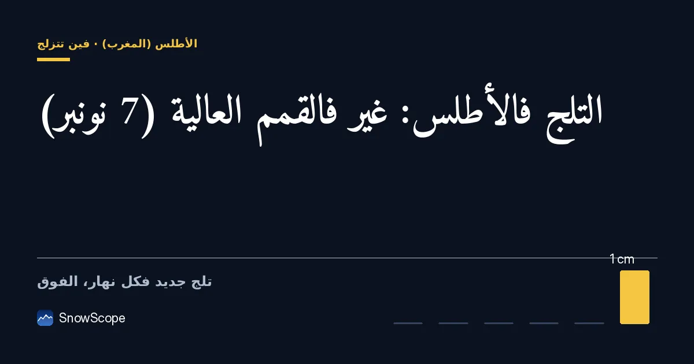
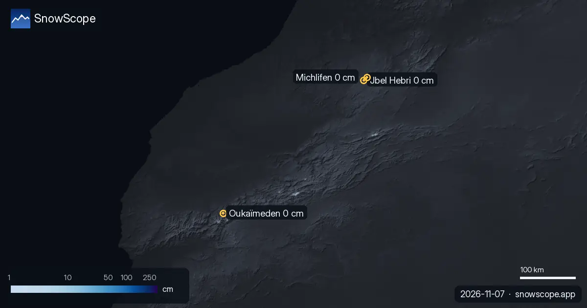
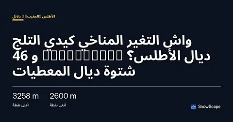

التلج فالأطلس: غير فالقمم العالية (7 نونبر)
في 7 نونبر، كل محطات الأطلس الثلاث باقية بلا تلج: ماعندش تلج على Oukaïmeden ولا Jbel Hebri ولا Michlifen. التلج باقي غير على الصخور العارية والتضاريس العالية فوق المحطات، حيث الهواء بارد بزاف باش يحتفظ بالتلج.
شوف توقعات التلج مباشرة ديال Oukaïmeden فالتطبيق ديال SnowScopeالعلو ديال التلج، التنبيهات والخريطة 3D، فابور.
شنو اللي تقول خريطة التلج اليوم
الأطلس كان عندو 190 كم² من تغطية التلج قبل يومين في 5 نونبر. تقلص لـ 110 كم² في أمس، ولـ 80 كم² اليوم غير. العمق الأعظم ديال التلج على الذروات العالية يوصل لـ 9 سم تقريبا.
كل الثلاث مناطق ديال المحطات فارغة: Oukaïmeden عندو 0 سم على الجهة الفوقانية، وكذلك Jbel Hebri و Michlifen. التلج تراجع لـ ذروات عارية باقية فوق بزاف من فين كتبدا البيست.
| المحطة | العلو ديال التلج | تلج جديد، 72 س | جاي، الأيام الجاية | الفوق |
|---|---|---|---|---|
| Oukaïmeden | 0 سم | 0 سم | 1 سم | 3258 م |
| Jbel Hebri | 0 سم | 0 سم | 0 سم | 2108 م |
| Michlifen | 0 سم | 0 سم | 0 سم | 2070 م |

لماذا مستوى الجليد مهم بزاف
في 7 نونبر، مستوى التجميد في Oukaïmeden يتراوح بين 4,180 م و 4,420 م. قمة المحطة ديالها تحت عند 3,258 م، بزاف تحت هادي الخط. هاد معناتو أن المطر أو التلج الرطب كيتسقط على كل ميل، من القاعدة لـ القمة.
في Jbel Hebri (القمة 2,108 م) و Michlifen (القمة 2,070 م)، مستوى التجميد يطلع أكثر نسبة للتضاريس. كل المحطتين فمنطقة حيث المطر نونبري هو القاعدة، ماشي التلج.
البداية بلا تلج نورمال في نونبر؟
ياه. لما نشوفو الشتوات اللي فاتو، العمق ديال التلج نورمال في هاد التاريخ ديال السنة عند 2,929 م قرب Oukaïmeden كان 0 سم. في 46 شتوة اللي فاتو، Oukaïmeden كانت تطابق أو اقل من شروط اليوم في 33 منهم. بداية نونبر غالبا جافة على كل نطاق الأطلس.
المحطتين الأقل، Jbel Hebri و Michlifen، ماعندهومش تاريخ تلج في هاد التاريخ أيضا: هوما تحت 2,110 م وندرا ما يحتفظو بتغطية بيضاء في نونبر إلا إذا عاصفة باردة كتجي.
شنو اللي جاي: سبوع ديال الذوبان
لـ 10 نونبر، توقعاتنا تبقا مستوى الجليد عالي وتجيب غير 1 سم لـ Oukaïmeden (غالبا في 9 نونبر). التلج ديال 9 سم اللي باقي على الذروات العالية رايح ينحف بزاف لان الهواء بارد باش.
في 10 نونبر، خريطة التلج توقعات الأطلس رايح ينزل لـ 70 كم²: خسارة أخرى من 80 كم² ديال اليوم. التلج اللي باقي راه يكون طبقة رقيقة على الصخور العارية، ماشي قاعدة ثابتة.
شنو المحطة اللي خصنا نراقبوها للحدث الجاي
Oukaïmeden وحدها عندها العلو باش تاخد تلج لما عاصفة شتوية جديدة تجي. عند 3,258 م، القمة ديالها عالية بزاف باش الهواء البارد يقدر يحفظ السقوط أبيض بدل الرطوبة. Jbel Hebri و Michlifen، كل واحد تحت 2,110 م، متعلقين بشروط أقسى بزاف: عاصفة باردة بزاف باش تهبط مستوى الجليد لـ تضاريسهم.
لما الشروط تتبدل—وراح تتبدل—Oukaïmeden راح تكون الأولى باش تضهر البياض على الخريطة. المحطتين الأقل راح يتبعو غير إذا تقلص درجة الحرارة حاد بزاف.
التحضير للمستقبل
التلج ديال بداية الموسم رقيق وضعيف. إذا كنت غادي لـ الأطلس في الأيام الجاية، توقع الصخور والعشب يختبيو تحت أي بقع بيضاء. رما على التضاريس ديال المحطات الموسومة المغطاة حيث موجودة.
التوقعات بعد أيام شوية يقدرو يتبدلو بمعطيات جوية جديدة. استعمل تطبيق SnowScope باش تتبع الخريطة وأنت الأسبوع كيتفسح وباش تحط تنبيه التلج الطري لـ Oukaïمeden. شوف الموقع ديال المحطة باش تأكد أن الأسانسيرات تشتغل قبل متحزم.
نصايح للي كيتزلجو
- التلج ديال بداية الموسم رقيق وغير مستقر: حتى سنتيمترات شوية يقدرو يخبيو الصخور والنباتات. شي على البيستات المفتوحة.
- Oukaïmeden هي المحطة الوحيدة العالية بزاف باش تحول التلج نونبري لأبيض. راقب توقعاتها بشد لما العواصف تقرب.
- مستوى الجليد فوق كل المحطات الثلاث هاد الأسبوع: المطر راح يسقط على كل ميل. الشروط ماراح تحسن إلا لما نظام بارد أقسى بزاف يجي.
- التوقعات تتبدل يوم فيوم. شوف خريطة SnowScope مرة أخرى قبل ما تسفر.
- قبل ما تهبط خارج البيست، شوف آخر نشرة ديال الانهيارات الرسمية وحالة فتح المحطة على الموقع ديالها.
على هاد الأرقام
العلو ديال التلج فالمحطات هو أكثر تلج فالجهة الفوقانية فالتاريخ المكتوب؛ هادو تقديرات لمنطقة، ماشي قياس فنقطة وحدة. التوقعات يمكن تتبدل. ديما شوف النشرة الرسمية ديال الانهيارات قبل ما تخرج من البيست.
كيفاش تستاشهد بهاد المقال
للبحث، التعليم ولا الصحافة: الأرقام والرسومات تقدر تعاود تخدم بيهم بحرية تحت CC BY 4.0 مع هاد الاستشهاد.
SnowScope (2026), التلج فالأطلس: غير فالقمم العالية (7 نونبر), https://snowscope.app/blog/ar/2026/11/atlas-morocco-atlas-snow-check-7-november-2026.html, تشاف ف 2026-11-07
SnowScope (Atlas Labs). (2026, November 7). التلج فالأطلس: غير فالقمم العالية (7 نونبر). SnowScope snow reports. https://snowscope.app/blog/ar/2026/11/atlas-morocco-atlas-snow-check-7-november-2026.html
BibTeX
@misc{snowscope2026atlasmoroccoatlassnowche,
author = {{SnowScope (Atlas Labs)}},
title = {التلج فالأطلس: غير فالقمم العالية (7 نونبر)},
year = {2026},
month = nov,
howpublished = {\url{https://snowscope.app/blog/ar/2026/11/atlas-morocco-atlas-snow-check-7-november-2026.html}},
note = {Published 2026-11-07 13:36 UTC; accessed 2026-11-07}
}· CC BY 4.0 · الطريقة، الداتا والأدوات →
Oukaïmeden: التلج والحرارة حسب العلو، هاد الشتا مقارنة مع اللي فاتت (الأدوات) →
تابع Oukaïmeden
فابور: ميساج ملي يجي التلج، والتوقعات كل صباح.
تقارير أخرى ديال التلج

الأطلس فيه التلج غير موجود إلا فوق 3,000 م اليوم: 60 كم² على الأرض الفوقانية، مع 11 سم فقط. ولا واحد حتى من المحطات الثلاث ديال التزحلق فيها التلج.

فالعلو ديال Oukaïmeden، السلسلة ديالنا ديال 46 شتوة كتبين 12 % أيام ديال التلج أقل؛ تحت، الإشارة كتضيع فالفرق الكبير بين الشتوات.

ولو تلج جديد ماتوقع للحاج Jbel Hebri ولا Oukaïmeden ف جوج سيمانا لي جايين. جبال الأطلس ماشي فيها التلج حيت نونبر كايمشي.